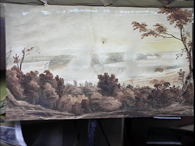

<TITLE>Niagra Falls</TITLE>

<center><h1>Niagra Falls Trees</center></h1>
<h4>

<pre>
 Date: Mon, 21 Jul 1997 00:48:40 -0400
From: Andrew Zebrun <AndrewZebrun@worldnet.att.net>
To: jj68@nyu.edu
Subject: Old trees (Old1.jpg) [1/2]


  I've got a great addition to your site, I
have an old painting of Niagara Falls before they cut
down all the trees. I always wondered how beautiful
it was, now I know. Here it is in .jpg, let me know if
that is not the proper format. I own this work and it
dates from roughly 1800. I've been researching it for
months and it may have been by John J. Audubon, I
found the letters Aud on the lower left hand side.

                                Andrew Zebrun III
</pre>
</h4>
<p>
<p>
<p>

<center></center>

<A HREF="index-2.html"></A>Return to Main Page<br><p><p>
<center><A HREF="comment.html">Comments</A></center><p>
<p>
<center>Please send e-mail to:  June Julian<A HREF="mailto:jj68@nyu.edu"> jj68@nyu.edu</center></A>

